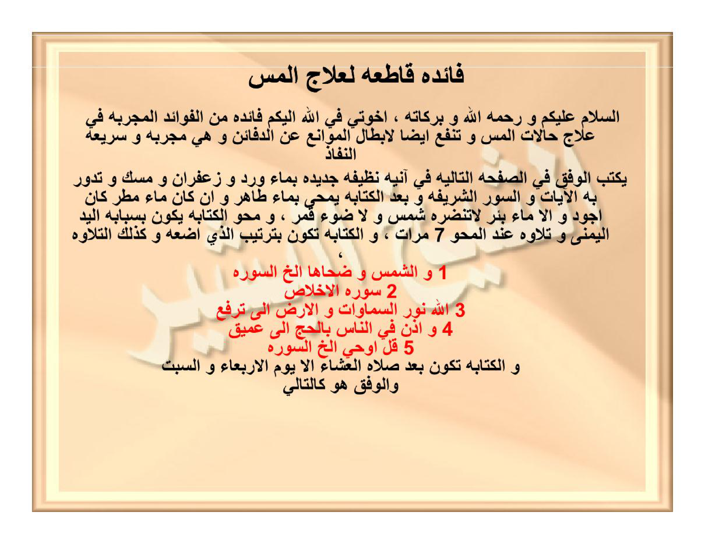

Hal10 cuplikan FINAL
HALAMAN 10 — FAEDAH MUHRIQAH 2/2 — JADWAL & QASAM — حِنْقَايِيلُ ### arab فَائِدَةٌ مُحْرِقَةٌ طَارِدَةٌ لِلْجِنِّ وَالْمَرَدَةِ بِإِذْنِ اللهِ أَخَذْنَا حُرُوفَ الرُّوحَانِيِّ مِنَ السَّطْرِ الثَّالِثِ وَهِيَ [ن ح ق] عَدَدُهَا ١٥٨ نُطْقُهَا [حِنْقَايِيلُ] هُوَ الرُّوحَانِيُّ نَكْتُبُهُ عَلَى الْأَرْكَانِ وَنَدُورُ بِهِ الْقَسَمَ الْآتِيَ [بِسْمِ اللهِ الرَّحْمَنِ الرَّحِيمِ أَقْسَمْتُ عَلَيْكُمْ أَيَّتُهَا الْأَرْوَاحُ الرُّوحَانِيَّةُ طَكْثَايِيلُ وَأَنْتَ يَا عَوْثَايِيلُ بِحَقِّ الْمَلِكِ الْحَاكِمِ عَلَيْكُمْ فَهْغَايِيلُ وَبِحَقِّ آهْيَا شَرَاهْيَا أَدُونَايَ أَصْبَاؤُوتَ آلِ شَدَّايَ وَبِحَقِّ إِنْ كَانَتْ إِلَّا صَيْحَةً وَاحِدَةً فَإِذَا هُمْ جَمِيعٌ لَدَيْنَا مُحْضَرُونَ أَنْ تَحْضُرُوا السَّاعَةَ وَتَنْزِلُوا عَلَى هَذَا الْمَارِدِ الْمُتَجَبِّرِ وَالْمُؤْذِي لِخَلْقِ اللهِ بِالطَّرْدِ وَالْحَرْقِ وَالنَّكَالِ خُذُوهُ وَبِأَنْوَارِكُمْ أَحْرِقُوهُ بِحَقِّ وَالسَّمَاءِ ذَاتِ الْبُرُوجِ إِلَى آخِرِ السُّورَةِ] ثُمَّ الْقَسَمُ يُتْلَى عَلَى كُلِّ وَرَقَةٍ ٥ مَرَّاتٍ وَكَذَلِكَ عَلَى الْمَاءِ وَالسَّلَامُ ### latin Akhadznā hurūfar-rūhāniy minas-sathrits-tsālitsi wa hiya [ ن ح ق ] — [Rajah Huruf — tidak diterjemahkan] — 'adaduhā mi'atun wa tsamāniyatun wa khamsūna (158) nuthquhā Hinqāyīl... bismillāhir-rahmānir-rahīm aqsamtu 'alaikum ayyatuhal-arwāhur-rūhāniyyah Thaktsāyīl wa anta yā 'Awtsāyīl bihaqqil-malikil-hākimi 'alaikum Fahghāyīl... ### Terjemahan Kita ambil huruf-huruf ruhani dari baris ketiga yaitu [ن ح ق] jumlahnya 158, pengucapannya [Hinqayil], dialah ruhaninya, kita tulis di sudut-sudut dan kita kelilingi dengan sumpah berikut: [Dengan nama Allah Yang Maha Pengasih Maha Penyayang, aku bersumpah kepada kalian wahai ruh-ruh ruhaniyah Thaktsayil dan engkau wahai 'Awtsayil dengan hak raja yang menguasai kalian Fahghayil dan dengan hak Ahya Syarahya Adu
Hal11 cuplikan FINAL
HALAMAN 11 — FAEDAH QATHI'AH 1/2 — فَائِدَةٌ قَاطِعَةٌ لِعِلَاجِ الْمَسِّ ### arab فَائِدَةٌ قَاطِعَةٌ لِعِلَاجِ الْمَسِّ اَلسَّلَامُ عَلَيْكُمْ وَرَحْمَةُ اللهِ وَبَرَكَاتُهُ، إِخْوَتِي فِي اللهِ إِلَيْكُمْ فَائِدَةٌ مِنْ الْفَوَائِدِ الْمُجَرَّبَةِ فِي عِلَاجِ حَالَاتِ الْمَسِّ وَتَنْفَعُ أَيْضًا لِإِبْطَالِ الْمَوَانِعِ عَنِ الدَّفَائِنِ وَهِيَ مُجَرَّبَةٌ وَسَرِيعَةُ النَّفَاذِ يُكْتَبُ الْوَفْقُ فِي الصَّفْحَةِ التَّالِيَةِ فِي آنِيَةٍ نَظِيفَةٍ جَدِيدَةٍ بِمَاءِ وَرْدٍ وَزَعْفَرَانٍ وَمِسْكٍ وَتُدَارُ بِهِ الْآيَاتُ وَالسُّوَرُ الشَّرِيفَةُ وَبَعْدَ الْكِتَابَةِ يُمْحَى بِمَاءٍ طَاهِرٍ وَإِنْ كَانَ مَاءَ مَطَرٍ كَانَ أَجْوَدَ وَإِلَّا مَاءَ بِئْرٍ لَا تَنْتَظِرُهُ شَمْسٌ وَلَا ضَوْءُ قَمَرٍ، وَمَحْوُ الْكِتَابَةِ يَكُونُ بِسَبَّابَةِ الْيَدِ الْيُمْنَى وَتِلَاوَةً عِنْدَ الْمَحْوِ ٧ مَرَّاتٍ، وَالْكِتَابَةُ تَكُونُ بِتَرْتِيبٍ الَّذِي أَضَعُهُ وَكَذَلِكَ التِّلَاوَةُ ١ وَالشَّمْسِ وَضُحَاهَا إِلَى آخِرِ السُّورَةِ ٢ سُورَةُ الْإِخْلَاصِ ٣ اللهُ نُورُ السَّمَاوَاتِ وَالْأَرْضِ إِلَى تُرْفَعَ ٤ وَأَذِّنْ فِي النَّاسِ بِالْحَجِّ إِلَى عَمِيقٍ ٥ قُلْ أُوحِيَ إِلَى آخِرِ السُّورَةِ وَالْكِتَابَةُ تَكُونُ بَعْدَ صَلَاةِ الْعِشَاءِ إِلَّا يَوْمَ الْأَرْبِعَاءِ وَالسَّبْتِ وَالْوَفْقُ هُوَ كَالتَّالِي ### latin Fā'idatun qāthi'atun li'ilājil-massi, as-salāmu 'alaikum ..., yuktabul-wafqu fish-shafhatit-tāliyah fī āniyatin nazhīfatin jadīdatin bimā'i wardin wa za'farānin wa miskin wa tudāru bihil-āyātu ... ### Terjemahan Faedah pemutus untuk mengobati kerasukan. Assalamu'alaikum warahmatullahi wabarakatuh, wahai saudara-saudaraku karena Allah, untuk kalian faedah dari faedah-faedah yang telah teruji dalam mengobati keadaan kerasukan dan juga bermanfaat untuk membatalkan penghalang dari harta terpendam, ia telah teruji dan cepat tembus. Wafaq pada halaman berikutnya di

Hal10 jadwal 5×13

Hal11 asli 1.2MB — 5 ayat merah tanpa kurung